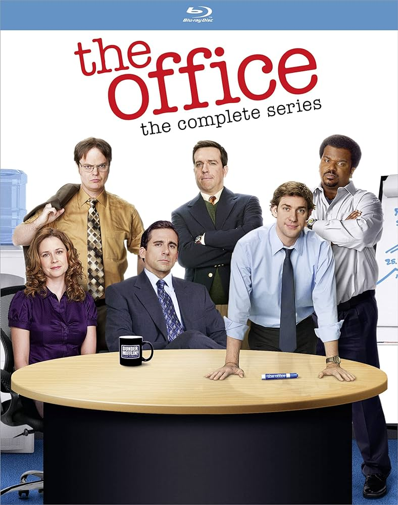
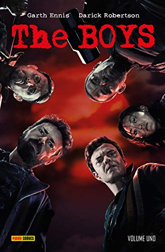

Atividade: sugestões de séries

Depois de casas mal-assombradas e espectros, Mike Flanagan embarca para o vilarejo de Crockett, localizado numa ilha afastada. Lá, acompanhamos a chegada de Riley Flynn (Zach Gilford), antigo morador que foi tentar o sucesso na cidade, mas viu sua vida desmoronar após se envolver num acidente que matou uma garota. De volta à casa dos pais, depois de anos na prisão, em busca de um recomeço, Flynn se depara com um lugar caindo aos pedaços e uma comunidade que luta para sobreviver. No entanto, as coisas estão prestes a mudar mesmo com a chegada do padre Paul (Hamish Linklater), sacerdote carismático que traz consigo um clima de renovação e esperança para os cidadãos desacreditados, mas também alguns mistérios que prometem abalar o povoado.

Final Space é uma série animada que acompanha Gary (Olan Rogers), um divertido e abobalhado astronauta cumprindo pena em uma isolada prisão espacial. Perto de terminar sua sentença, ele encontra um adorável e misterioso alienígena chamado Mooncake com pontencial para destruir planetas inteiros.
The Office foi criada com o objetivo de retratar a vida cotidiana dos funcionários de uma empresa americana de papelaria, através de uma mistura de comédia e drama. A série segue a vida dos funcionários da Dunder Mifflin, desde os altos e baixos de suas carreiras profissionais até as dinâmicas de suas vidas pessoais.
Uma série de heróis que superou as menções em mídias sociais das séries Marvel, The Boys é uma das produções de maior sucesso do streaming Amazon Prime Video. Em meio a sua segunda temporada (e com a terceira já confirmada!), a série trouxe para a televisão os personagens criados por Garth Ennis e Darick Robertson, autores dos quadrinhos que subverteram o gênero de super heróis.